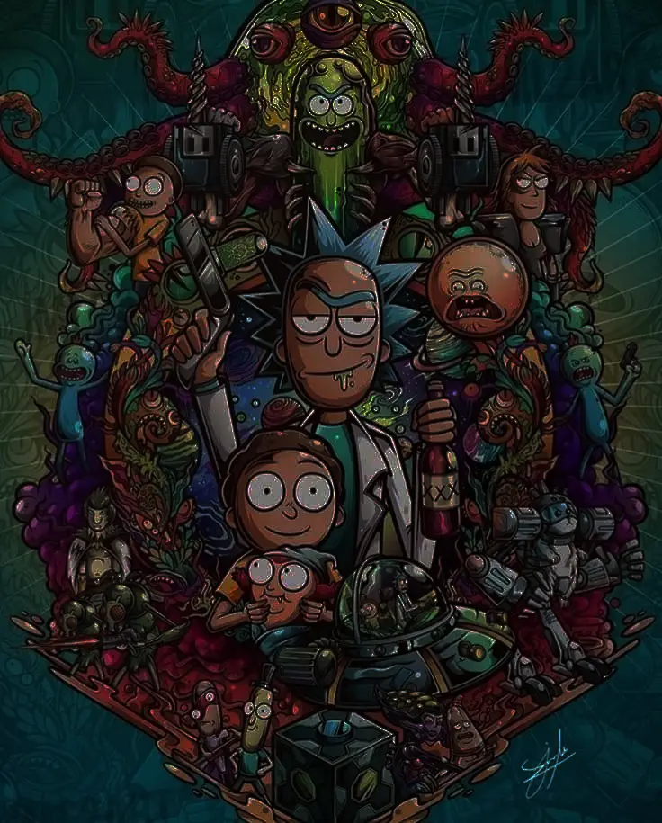

<section class="w-full h-auto mt-28 lg:mt-40 bg-transparent pb-20">
  
  
  <div class="flex flex-col mx-auto w-3/4 gap-14 overflow-auto my-28 lg:my-40">
    <h2 class="titleDegrant text-2xl lg:text-6xl font-bold">Section characters</h2>
    <p class="text-lg text-white">This is the part of the website where you can search for any character from the first 4 seasons.</p>
  </div>

  <div>

  </div>

  <app-character-card *ngIf="characteresFind"
    [charactersRickAndMorty]="characteresFind"
    [colorText]="'text-white'"
    class="w-full lg:mt-30 grid place-items-center grid-cols-1 gap-6 md:grid-cols-2  z-50 mb-12" />

</section>

